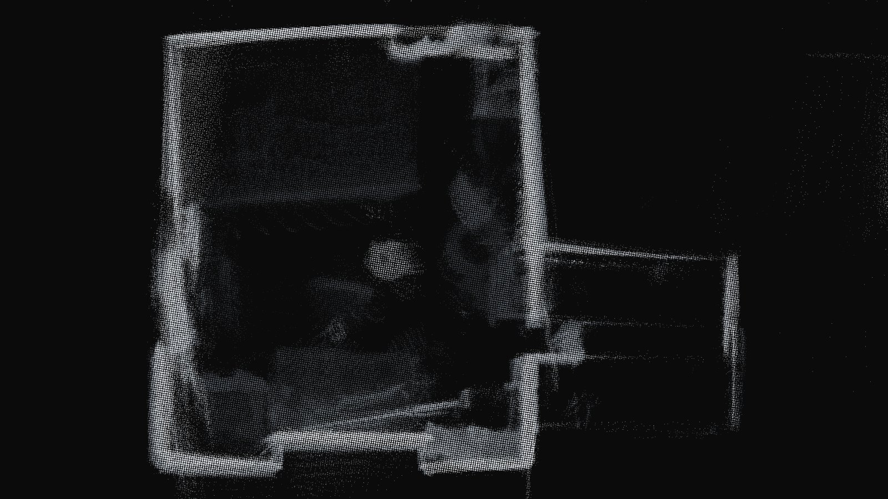
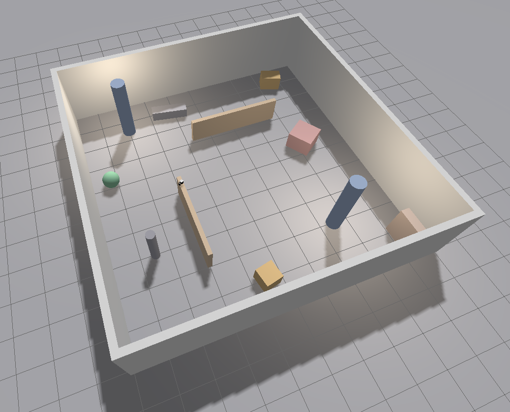
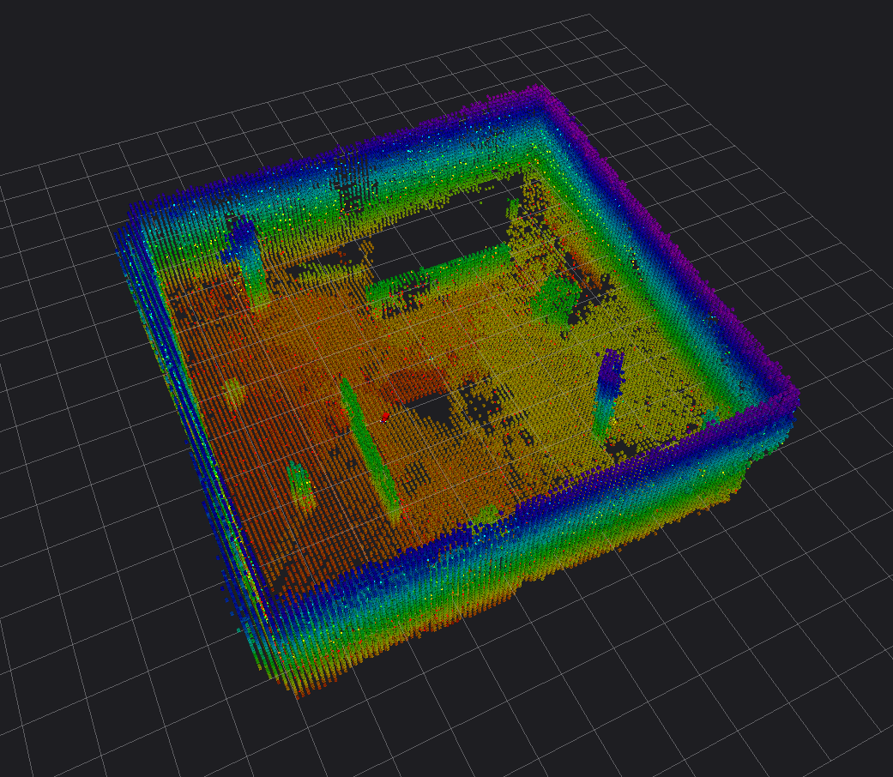

Robotics · 2026
Handheld
LiDAR Scanner
A handheld 3D room scanner built around a Unitree L2 lidar, with lidar-inertial SLAM, a Gazebo simulation of the whole thing, and a driver fix for a sensor whose clock runs at half speed.
- Role
- Solo Project
- Duration
- Six weeks
- Tools/Skills
- ROS 2, C++, Python, Gazebo
- Status
- Complete

Process
-
Setting Up the Simulation
Before buying anything, I wanted to learn ROS 2 and SLAM on a robot that couldn't break.
The first step was setting everything up. This part involved a lot of tools which I had never used before. I went with ROS 2 Jazzy since it has the best compatibility with a lot of tools out there. After that I loaded up Unity and tried to write a simple Unity TCP connection. After many failed attempts I had something that "worked": it would publish, but it was inconsistent and finicky. So, I scrapped it and downloaded Gazebo, which is really what I should have done in the first place.
In Gazebo I turned the robot into the thing I actually wanted: a handheld 3D scanner. The first version was a 2D spinning lidar on a rotating servo. I went with this because I was planning on using the VLP-16 scanner. However, when I did some more research I realized the VLP-16 was end of life, and VERY expensive on Facebook Marketplace. So instead I landed on the Unitree L2, which was not only cheaper, but had a much wider field of view than the VLP-16 (360° × 90° vs. 360° × 30°). I updated my URDF file, did a little bit of testing and moved on to the next step.
-
Simulation Testing
Adding realistic sensor noise and movement to my simulation, and pushing it to its limits.
Now that my simulation was set up, I had a workspace to test how well this setup actually works. The first step was to add realistic sensor noise. To do this I created a custom noise injection script that changed both IMU and lidar values based on a Gaussian distribution. Gazebo does give a parameter to add this directly in the URDF, however I wanted more control over the types of faults I could inject.
Next, I needed the scanner to actually move like it was being carried. I wrote a motion script that walks the scanner through a loop of waypoints around the room. On top of that path, I layered the motion of a real hand: a vertical bob and side-to-side sway at walking cadence, a slow wobble from the wrist, and a small 8–12 Hz hand tremor. One problem I ran into was that Gazebo's built-in velocity controller just sets the model's velocity directly, so the simulated IMU never felt any acceleration. To fix this, I wrote a custom Gazebo plugin that moves the scanner by applying forces and torques, so the IMU sees the same kind of motion it would in someone's hand. Walking speed, turn rate and tremor are all parameters. This allowed me to test different speeds and see how GLIM, the lidar-inertial SLAM package I chose, reacts. I pushed it as far as 10.0 m/s and 90.0°/s with good results.
-
Scanning My Room
Taking the real Unitree L2 off the shelf and finding out everything the simulation didn't tell me.
With the simulation working, it was finally time to plug in the real Unitree L2. Since my whole setup lives in WSL, I passed the lidar through from Windows with usbipd, launched the same GLIM pipeline I'd been using in sim, and walked around my room. The first maps were bad. Walls smeared whenever I moved quickly, and the map slowly drifted away from where it should have been. My first guesses were that WSL couldn't keep up or that data was being dropped, but neither turned out to be the problem.
To find the real cause, I recorded the raw serial data directly on Windows and compared it to what the driver was reporting. It turned out the L2's firmware was stamping each IMU sample as 2 ms apart, but the IMU was really running at about 252 Hz, so the sensor's clock was running at only 0.505x real time. GLIM was seeing every motion as twice as fast as it really was. I modified the driver to correct the timestamps, and the smearing went away. Next was the accelerometer. At rest it read about 10.15 m/s² instead of 9.81, and the error was different on each axis. My first fix with a single scale factor made things worse, and the map flew off almost 190 m. I ended up calibrating a separate scale and bias for each axis, which finally made the map stable. I also found the driver occasionally sends a scan with broken timestamps that freezes GLIM, so I wrote a small filter node that drops those scans before they get to it.
What the scanner sees


Specifications
| Sensor | Unitree L2, 360° lidar with built-in 6-axis IMU |
|---|---|
| Measured rates | IMU 252 Hz, ~36,000 points/s |
| Connection | USB serial, passed into WSL2 with usbipd |
| SLAM | GLIM lidar-inertial odometry with loop closure (CPU) |
| Software | ROS 2 Jazzy, Ubuntu 24.04 in WSL2 |
| Simulation | Gazebo, custom C++ handheld-motion plugin |
What I learned
- Getting a working simulation is just the start. Real sensors bring in issues you could never have dreamed of.
- Do your research. I wasted a lot of time trying to use tools that weren't the best option for my needs.
- Stop guessing your causes from the symptoms. Sometimes you need to go into the raw data to see what's wrong.
Next
Strap it onto my Hexapod.